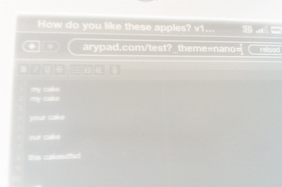

I have been none stop since Thursday and I figure, what with it now being technically Tuesday I should give myself an opportunity to brain dump. So in the last 4 days..
I earned a BrainPOP badge, yay thanks for that :)
I'm Impressed by Egil, Joes and Michael's ability to sit in complete science with the odd groan for prolonged periods of time.
It sucked that Aaron Iba the original developer of Etherpad couldn't make it talk to us, he was ill, I hope he gets better and gets a chance to have a chat with us soon!
I'm not a proper programmer, you might think I am because I can fix problems by programming. But programmers are awesome. Scala has changed and Etherpad can't compile on the latest version so I went into #scala on freenode, explained my problem and some guy fixed it and committed to Github.
One of the work vehicles got broken into. We will not be claiming on the car insurance and probably wont report it to the police. Tools were left in the van. It's just one of those things that comes with the territory of living in Bradford.
Firebug is awesome.
I now have a load of kudos on Reddit, how the hell did that happen whilst I was away from my computer?
As a general rule of thumb, caretakers should avoid touching ICT in schools, in hindsight I'm sure they create more problems than they solve.
Primary Blogger has had some updates (I can only assume by Adam) and it looks much nicer.
We had a bunch of hackers from Olin university join us for the hackathon and while I appreciate their efforts I was slightly disappointed with their output.
Everyone from the Etherpad foundation shares the same views about how the foundation and software should be maintained and supported.
The Amazon Kindle doesn't really fit into my busy life schedule. Most tech rarely does. I didn't get time for books before the kindle so who was I kidding thinking I would when I bought it? It is a great device though, I wish I had more time to play with it.
Here is a picture of Etherpad running on it.
